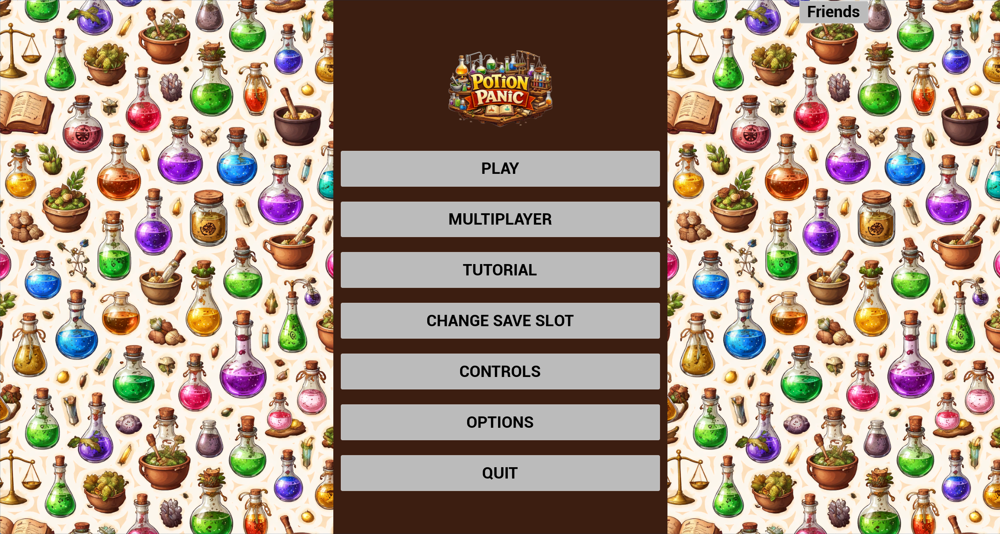
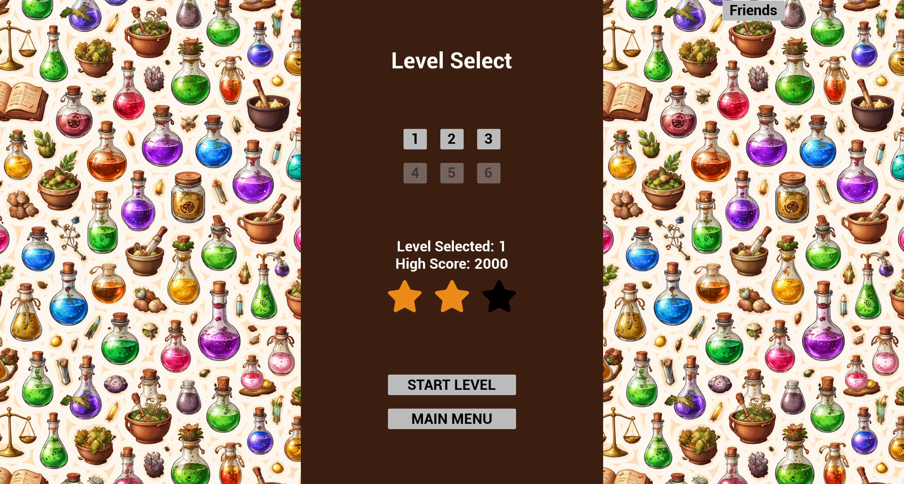
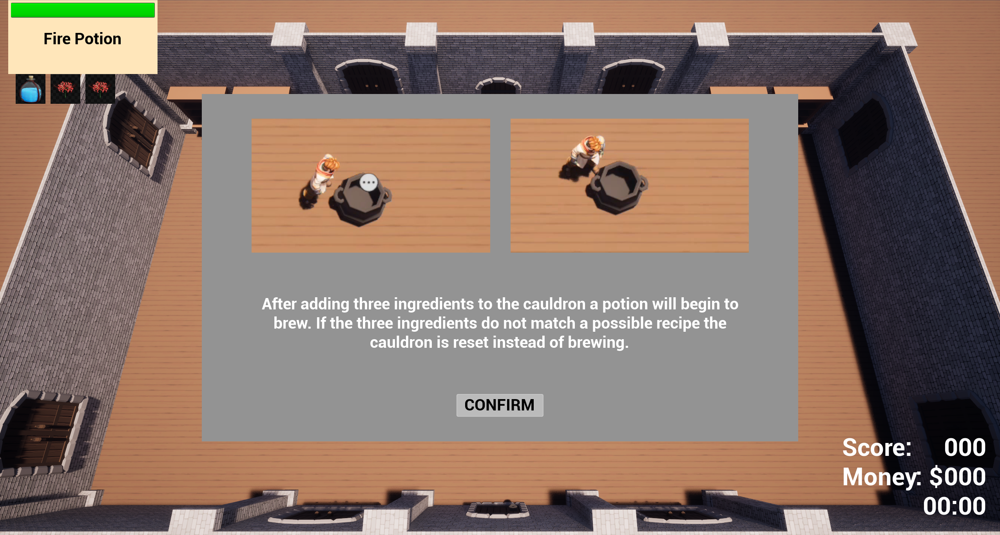
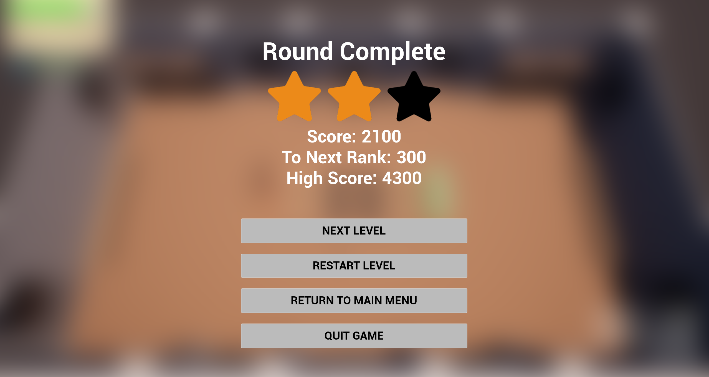

Potion Panic






Game Developer | Unreal Engine | C++ | Unity | C#




Potion Panic is a PC game that blends chaotic party gameplay with the simulation of running an apothecary shop. In each round, players must quickly juggle tasks to brew potions requested by customers within a limited time. As the game progresses, new ingredients and more complex steps are introduced, increasing the challenge while players strive to maximize their score.
Tip: click the Code chips above to jump straight to the snippet.
void APlayingGameState::StartRoundTimer(float RoundLength)
{
if (!HasAuthority())
return;
RoundTimeRemaining = RoundLength;
OnRep_RoundTimeRemaining();
CurrentScore = 0;
OnRep_CurrentScore();
GetWorldTimerManager().SetTimer(RoundTimerHandle, this, &APlayingGameState::UpdateTimers, 1.0f, true);
GetWorldTimerManager().SetTimer(RequestTimerHandle, this, &APlayingGameState::GenerateNewRequest, RequestGenerationFrequency, true);
SetCurrentGamePhase(EGamePhase::InProgress);
// Generate the first request immediately so that players have a request to start with
FTimerHandle InitHandle;
GetWorldTimerManager().SetTimer(InitHandle, this, &APlayingGameState::GenerateNewRequest, 0.1f, false);
}
void APlayingGameState::UpdateTimers()
{
if (!HasAuthority())
return;
// Handle Round Timer Countdown
if (RoundTimeRemaining > 0)
{
RoundTimeRemaining -= 1.0f;
OnRep_RoundTimeRemaining();
}
else
{
GetWorldTimerManager().ClearTimer(RoundTimerHandle);
UE_LOG(PlayingGameState, Display, TEXT("Round Ended! Final Score: %d"), CurrentScore);
SetCurrentGamePhase(EGamePhase::RoundEnd);
}
//Handle Request Timer Countdown - iterate backwards through the array to prevent references to removed elements
if (CurrentRequests.Num() != 0)
{
for (int32 i = CurrentRequests.Num() - 1; i >= 0; --i)
{
CurrentRequests[i].RemainingRequestTime -= 1.0f;
if (CurrentRequests[i].RemainingRequestTime <= 0)
{
CurrentRequests.RemoveAt(i);
CurrentScore -= ScorePenaltyForExpiredRequest;
UE_LOG(PlayingGameState, Display, TEXT("A request has expired!"));
}
}
OnRep_CurrentRequests();
OnRep_CurrentScore();
}
}
struct FPotionRecipe : public FTableRowBase
{
GENERATED_BODY()
public:
UPROPERTY(EditAnywhere, BlueprintReadWrite)
FString PotionName;
UPROPERTY(EditAnywhere, BlueprintReadWrite)
UStaticMesh* PotionMesh;
UPROPERTY(EditAnywhere, BlueprintReadWrite)
FVector PotionMeshScale = FVector(1.0f, 1.0f, 1.0f);
UPROPERTY(EditAnywhere, BlueprintReadWrite)
TArray<FDataTableRowHandle> PotionIngredients;
UPROPERTY(EditAnywhere, BlueprintReadWrite)
EPotionState PotionState = EPotionState::NotStarted;
UPROPERTY(EditAnywhere, BlueprintReadWrite)
int PotionLevel;
UPROPERTY(EditAnywhere, BlueprintReadWrite)
int CurrencyReward;
UPROPERTY(EditAnywhere, BlueprintReadWrite)
float RequestTimer;
UPROPERTY(BlueprintReadWrite)
float RemainingRequestTime;
bool operator==(const FPotionRecipe& Other) const
{
return PotionName == Other.PotionName;
}
};
void APlayingGameState::GenerateNewRequest()
{
if (!HasAuthority())
return;
// Check if requests are 0 to prevent crashes
if (PossibleRequests.Num() == 0)
{
UE_LOG(PlayingGameState, Warning, TEXT("No possible requests available!"));
return;
}
// Check if we have room for more requests
if (CurrentRequests.Num() < MaxRequests)
{
int NewRequestIndex = FMath::RandRange(0, PossibleRequests.Num() - 1);
FPotionRecipe NewRequest = PossibleRequests[NewRequestIndex];
NewRequest.RemainingRequestTime = NewRequest.RequestTimer;
CurrentRequests.Add(NewRequest);
OnRep_CurrentRequests();
}
else
{
UE_LOG(PlayingGameState, Display, TEXT("Request Generation Skipped - Max Number of Requests Reached!"));
}
}
void URequestPopup::UpdateRequest(FPotionRecipe recipe)
{
int IngredientCount = recipe.PotionIngredients.Num();
// Update the potion name
PotionNameText->SetText(FText::FromString(recipe.PotionName));
// Update the request timer
float Ratio = recipe.RemainingRequestTime / recipe.RequestTimer;
RequestTimer->SetPercent(Ratio);
if (Ratio > 0.66f)
{
RequestTimer->SetFillColorAndOpacity(FLinearColor::Green);
}
else if (Ratio > 0.33f)
{
RequestTimer->SetFillColorAndOpacity(FLinearColor::Yellow);
}
else
{
RequestTimer->SetFillColorAndOpacity(FLinearColor::Red);
}
// Update the request ingredients
for (int index = 0; index < IngredientIcons.Num(); index++)
{
// If there is an ingredient for the slot load the icon and update the icon
if (index < IngredientCount)
{
FPotionIngredient* Ingredient = recipe.PotionIngredients[index].GetRow<FPotionIngredient>(TEXT("Ingredient Lookup"));
if (Ingredient)
{
UTexture2D* IconImage2D = Ingredient->IngredientIcon;
IngredientIcons[index]->SetBrushFromTexture(IconImage2D);
IngredientIcons[index]->SetVisibility(ESlateVisibility::Visible);
// If the ingredient has a modifier, load the modifier icon and update the icon
if (Ingredient->IngredientState == EIngredientState::Dried)
{
ModifierIcons[index]->SetBrushFromTexture(DriedIcon);
ModifierIcons[index]->SetVisibility(ESlateVisibility::Visible);
ModifierBackgroundIcons[index]->SetVisibility(ESlateVisibility::Visible);
}
else if (Ingredient->IngredientState == EIngredientState::Ground)
{
ModifierIcons[index]->SetBrushFromTexture(GroundIcon);
ModifierIcons[index]->SetVisibility(ESlateVisibility::Visible);
ModifierBackgroundIcons[index]->SetVisibility(ESlateVisibility::Visible);
}
else
{
ModifierIcons[index]->SetVisibility(ESlateVisibility::Hidden);
ModifierBackgroundIcons[index]->SetVisibility(ESlateVisibility::Hidden);
}
}
}
// Hide the image if there is not an ingredient to fill the slot
else
{
IngredientIcons[index]->SetVisibility(ESlateVisibility::Hidden);
ModifierIcons[index]->SetVisibility(ESlateVisibility::Hidden);
ModifierBackgroundIcons[index]->SetVisibility(ESlateVisibility::Hidden);
}
}
}
void UMyGameInstance::LoadSettingsSaveData()
{
// Set the quality settings
UGameUserSettings* Settings = GEngine->GetGameUserSettings();
Settings->SetOverallScalabilityLevel(SettingsSave->QualitySettingIndex);
if (!CM_User || !CB_Music) return;
// Activate the mix and set the bus values
UAudioModulationStatics::ActivateBusMix(this, CM_User);
UAudioModulationStatics::SetGlobalBusMixValue(this, CB_Music, SettingsSave->MusicVolume);
UAudioModulationStatics::SetGlobalBusMixValue(this, CB_SFX, SettingsSave->SFXVolume);
}
void APlayingGameState::LoadPossibleRequests()
{
// Check if the potion recipes table and game instance are valid
if (PotionRecipesTable)
{
int CurLevel = instance->GetCurrentLevelIndex();
TArray<FPotionRecipe*> AllRecipes;
PotionRecipesTable->GetAllRows<FPotionRecipe>(TEXT(""), AllRecipes);
// For each recipe , if the potion level is less than or equal to the current level, add it to the possible requests array
for (FPotionRecipe* Recipe : AllRecipes)
{
if (Recipe->PotionLevel <= CurLevel)
{
FPotionRecipe RecipeCopy = *Recipe;
PossibleRequests.AddUnique(RecipeCopy);
UE_LOG(PlayingGameState, Display, TEXT("Added %s to possible requests!"), *Recipe->PotionName);
}
}
}
else
{
UE_LOG(PlayingGameState, Warning, TEXT("PotionRecipesTable is not set!"));
}
}
void UMyGameInstance::ChangeCurrentSaveSlot(int SlotIndex)
{
// Set the current save slot index and load the saved game data from the new save slot
CurrentSaveSlotIndex = SlotIndex;
SlotName = SlotPrefix + FString::FromInt(CurrentSaveSlotIndex);
SaveGame = Cast<UProgressSaveGame>(UGameplayStatics::LoadGameFromSlot(SlotName, 0));
if (!SaveGame)
{
SaveGame = Cast<UProgressSaveGame>(UGameplayStatics::CreateSaveGameObject(UProgressSaveGame::StaticClass()));
SaveGame->HighestLevelAchieved = 1;
SaveGame->LevelHighScores.Add(0);
SaveGame->RankAchieved.Add(0);
}
SettingsSave->SaveSlotIndex = CurrentSaveSlotIndex;
SaveSettings();
}
void UMyGameInstance::UpdateSavedGameData(int CurrentLevel, int Score, int Rank)
{
bool changeMade = false;
if (SaveGame)
{
// If player reached at least rank 1 and the highest level is the current one advance it one
// Also added failsafe check for number of levels to restrict
if (CurrentLevel >= SaveGame->HighestLevelAchieved && Rank > 0 && CurrentLevel < Levels.Num() - 2) // -2 to account for the tutorial level and 0 indexing
{
SaveGame->HighestLevelAchieved = CurrentLevel + 1;
changeMade = true;
}
//Check the score for the current level against the high score for that level and update if the current score is higher
if (SaveGame->LevelHighScores.Num() >= CurrentLevel)
{
if (SaveGame->LevelHighScores[CurrentLevel - 1] < Score)
{
SaveGame->LevelHighScores[CurrentLevel - 1] = Score;
changeMade = true;
}
}
else
{
// If there is no high score for the current level, add the current score as the high score for that level
SaveGame->LevelHighScores.Add(Score);
changeMade = true;
}
if (SaveGame->RankAchieved.Num() >= CurrentLevel)
{
if (SaveGame->RankAchieved[CurrentLevel - 1] < Rank)
{
SaveGame->RankAchieved[CurrentLevel - 1] = Rank;
changeMade = true;
}
}
else
{
// If there is no rank for the current level, add the current rank as the rank achieved for that level
SaveGame->RankAchieved.Add(Rank);
changeMade = true;
}
// Only want to save the game if any changes were made to the save game data to avoid unnecessary disk writes
if (changeMade)
{
// Save the updated save game data back to the save slot
SlotName = SlotPrefix + FString::FromInt(CurrentSaveSlotIndex);
UGameplayStatics::AsyncSaveGameToSlot(SaveGame, SlotName, 0);
}
}
}
void APlayingGameState::CheatAddScore(int Amount, UCheatManager* CallingClass)
{
//Always confirm command is being called with a Cheat Manager
if (CallingClass)
{
CurrentScore += Amount;
OnRep_CurrentScore();
UE_LOG(PlayingGameState, Warning, TEXT("CheatAddScore called! Current Score: %d"), CurrentScore);
}
else
{
UE_LOG(PlayingGameState, Warning, TEXT("CheatAddScore called with null Cheat Manager!"));
}
}
void APlayingGameState::CheatPauseTimer(UCheatManager* CallingClass)
{
//Always confirm command is being called with a Cheat Manager
if (CallingClass)
{
if (isRoundTimerPaused)
{
// Unpause the update timer and set the time remaining back to what it was at the point of toggle
GetWorld()->GetTimerManager().UnPauseTimer(RoundTimerHandle);
isRoundTimerPaused = false;
}
else
{
//Pause the update timer, save the time remaining at the point of toggle, and set the time remaining to a very high value to effectively make it infinite
GetWorld()->GetTimerManager().PauseTimer(RoundTimerHandle);
isRoundTimerPaused = true;
}
}
else
{
UE_LOG(PlayingGameState, Warning, TEXT("CheatAddScore called with null Cheat Manager!"));
}
}